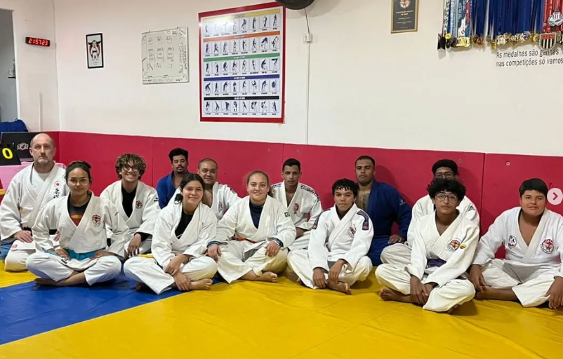
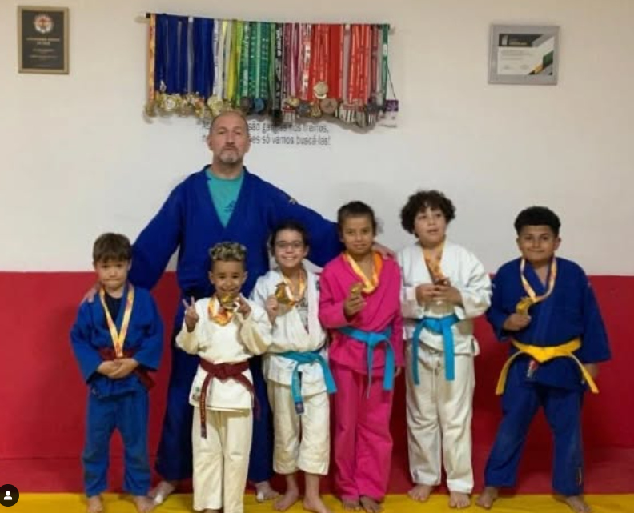
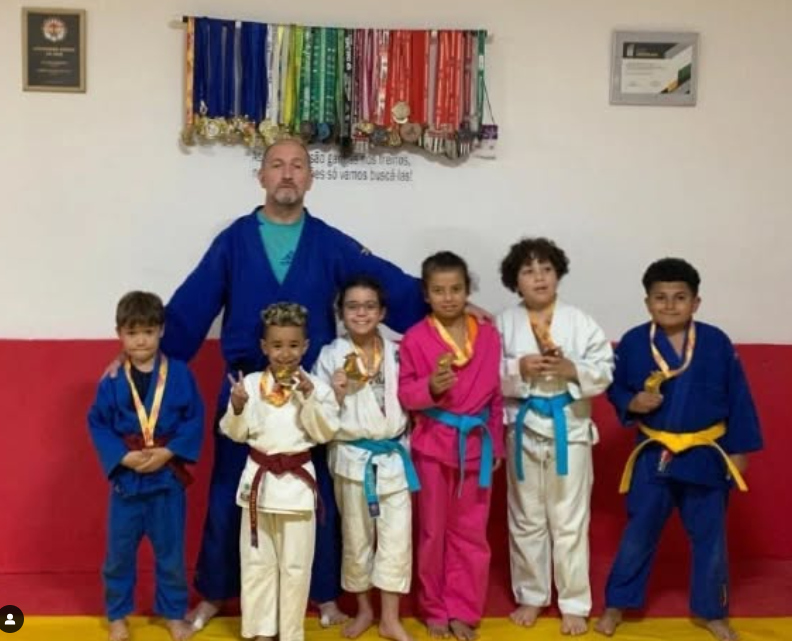
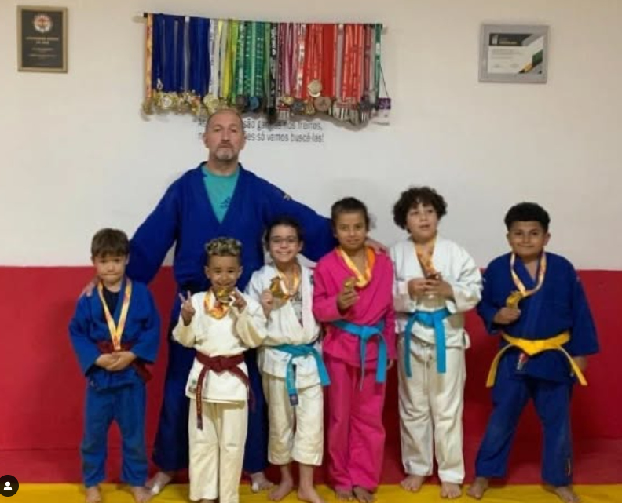

ASSOCIAÇÃO AMIGOS DO JUDÔ
AULAS DE JUDÔ PARA ADULTOS E CRIANÇAS.
Oferecemos aulas de Judô para todas as idades, desde crianças até adultos, em um ambiente acolhedor e seguro. Nossas aulas são planejadas para promover o desenvolvimento físico, mental e social, através de técnicas e valores do Judô, como respeito, disciplina e perseverança. Além de melhorar a coordenação motora, força e flexibilidade, o Judô também ensina a importância do trabalho em equipe e do autocontrole. Venha praticar e se divertir enquanto aprende uma arte marcial milenar!

 


Horários das Aulas
- Segunda, Quarta e Sexta
- ü•ã Iniciantes (Todas as idades) - 17:45h √†s 18:45h
- üë¶ Infantil (5 a 8 anos) - 18:45h √†s 19:40h
- üí™ Inter ( 9 a 17 anos) - 19:45h √†s 20:45h
- ü§º Adultos e Veteranos 20:45 √†s 21:50
Nosso Endereço
Rua Exemplo, 123 - Bairro, Cidade, Estado
YouTube